Interpreting images is a difficult task to automate. Image
interpretation consists of both low level and high level
vision tasks. In this technical report, we develop a scheme for joint
segmentation and image interpretation in a multiresolution framework,
where segmentation (low level) and interpretation (high level)
interleave. The idea being that the interpretation block should be able
to guide the segmentation block which in turn helps the interpretation
block in better interpretation. We assume that the conditional
probability of the interpretation labels, given the knowledge vector
and the measurement vector is a MRF and formulate the problem as a MAP
estimation problem at each resolution. We find the optimal
interpretation labels by using the simulated annealing algorithm. The
proposed scheme is validated on some real scene images. We also
describe in detail the procedure adopted to gather knowledge, which though
not connected with the title of this report is an important aspect considering the
fact that generation of the knowledge base is a prerequisite for doing
image interpretation.
Technical Report SPANN 96.2
by K. Sunil Kumar U. B. Desai
DEPARTMENT OF ELECTRICAL ENGINEERING INDIAN INSTITUTE OF TECHNOLOGY, BOMBAY MAY 1996
Image interpretation is a hard task to automate, considering the fact
that the human visual system, undoubtedly, the best visual system, is
fooled quite often. Interpretation is a high-level description
of the environment from which the image was taken. It is essentially an
analysis problem where we try to understand the image by identifying
some important features or objects and analyze them depending on their
spatial relationship.
Interpretation must be in the form that is suitable for planning such
diverse activities as robot arm and hand motion, obstacle avoidance by
vehicle, aircraft navigation, remote sensing or in biomedical
applications. Image interpretation is knowledge based processing, which
requires the use of both low level processing (image processing
techniques of contrast enhancement, computer vision techniques of
segmentation, feature extraction, region labeling) and high level vision
tasks involving processing a great amount of non-image related
knowledge underlying the scene representation, for example, knowledge
about the world physical constraints influencing entities and their
environment [1]. At low-level the basic processing unit
being pixel, there is no simple computational transformation that will
map arrays of pixels, onto stored symbolic concepts represented in the
high level knowledge base. It is generally accepted that many stages of
processing must take place for reliable interpretation of a scene.
Though considerable amount of work has been done in the area of image
interpretation one is still on the lookout for a fully automated image
interpretation scheme. Automatic scene interpretation requires the
construction of at least a partial description of the original
environment, rather than a description of the image itself. It involves,
not only labeling certain regions in an image, or locating a single
object in the viewed scene, but often requires a 3D model of the
surroundings, with associated identification in the 2D image.
For high level interpretation, the principle unit of information is a
symbolic description of an object, or a set of image events, sometimes
referred to as symbolic tokens, extracted from the image. The description
includes relationships to other 2D symbolic tokens extracted from
the sensory data, such as lines, segments and other objects in the 3D
scene being viewed. It also includes pointers to elements of general
knowledge that has been used to support the interpretation process.
The interpretation literature is quite vast and is under investigation
since a couple of decades. The first available literature dates back to
1969 [2,3,4]. Research in the area of
image interpretation encompasses images related to biomedical medical
applications [5,6,7,8,9], satellite images [10], aerial
imagery
[11,12,13,14,15,16,17,18,19], road scenes
[20], range images [21,22,23,24], natural scenes [25,26],
natural color scenes [27], infra red imagery
[28,29], remotely sensed data [30,31], seismic data [32], SAR images
[33], laser radar images [34], astronomical
image [35], thermal images [29], ultra sound
images [36,8], geophysical image
[37] and from stereo [38,39] and
moving images [40,41] or moving viewer
[42].
Early work on image interpretation was based largely on isolated image
features and these salient features were classified into a finite set
of classes, namely, interpretation labels, presumably this scheme is
not robust especially when the low level vision tasks give out an
erroneous output. More recent approaches adopt knowledge based systems
for image interpretation. Here, a great amount of non-image related
knowledge underlying the scene representation is used along with the
spatial constraints. Thus even an ambiguous object can be recognized
based on the successful recognition of its neighborhood objects.
The early work in knowledge based image interpretation is summarized in
Nago and Matsuyama [11], Binford [43], Ohata
[27], Smyrniotis [44], Ballard
[45], Draper [20], Mitiche [46]
and more recently by Chu [34,47] and for man made
objects like office buildings and houses in an aerial images by Schutte
[19]. Rule based strategies are especially appropriate in
view of lack of complete models and algorithmic strategies
[32,1,48,49]. Fourier domain
has been used for interpretation and classification of images
[3], projective invariants and deformable templates for
interpretation of SAR by [33], cellular automata
[50], Morphometric and Densitometric Approach
[51], Bayesian networks [52,53,54,55,56], Algebraic Topol
ogy
[57] and of late, Markov Random Field (MRF) models are
being used for image interpretation with the view to make the
interpretation systematic and domain independent [58],
[59], [56]. Most of the interpretation schemes
assume the availability of a good segmented image of the scene to be
interpreted. But in practice obtaining
a good segmented image is difficult for the simple reason that
segmentation itself depends on and hence is a function of the output of
interpretation.
Possibly the first time when interpretation and segmentation were seen as related
problems stems from experiments conducted by Tenenbaum and Barrow
[60] where they experiment on the use of interpretation to
guide segmentation. Though their requirement was to segment an image, we
see that it was a good step, since till then though it was known that
both segmentation and interpretation were related, no one exploited that fact.
Later
there was discussion in this regard by Bajcsy in [61],
Sonka et al [62] have integrated segmentation and
interpretation into a single feedback process that incorporates
contextual knowledge. They use genetic algorithm to produce an
optimal image interpretation. More recently, Kim and Yang
[63] integrate segmentation and interpretation by forming a
combined weighted energy function; the segmentation block is weighted
high initially and as the algorithm iterates the weights shifts to the
interpretation block.
In this report, we propose a scheme for joint
segmentation and image interpretation in a multiresolution framework.
Unlike earlier work in multiresolution interpretation [14]
we do not assume apriori knowledge of the segmented image. In fact, in
our approach segmentation and interpretation are interleaved as shown in
Figure 1 and the
two operations are carried out at each resolution, the idea being that
the two operations while integrating, help each other to produce a
better segmentation as well as interpretation.
In Section 2, we formulate the problem of joint
segmentation and image interpretation. The construction of
energy function and the clique function is given in Section 3.
Details of the features used in image interpretation is given in Section
4.
The proposed scheme is described in Section
5 and the experimental results are discussed for a
variety of images in Section 6. We conclude and give
direction for future work in Section 7.
Appendix A
details the procedure involved in acquiring knowledge form a given
image by taking an example image and assuming the availability of
XV the image viewer, while Appendix B discusses the problems
faced when this work was being carried out!
We give details of procedures that have been used in this report for the
sake of completion to simplify the overall reading of this report
in Appendix.
Figure 1: The joint segmentation and interpretation scheme
The problem of image interpretation can be stated as follows: given an image
which is a projection of a 3D scene onto the 2D plane and some knowledge
about the 3D environment, segment the image and interpret it based on the
segmented image. This is shown in Figure 1, except for the
fact that the portions corresponding to wavelet transform and refine using difference image
does not come into existence.
We formulate the problem in a multiresolution framework.
Multiresolution is a mode of efficiently and effectively representing
the data so that it can be used with effect to reduce the
computational complexity. It can be though of as a data
structure which produces a successive condensed representation of the
information in a given image. The most obvious advantage of this type
of representation is that they provide a possibility for reducing the
computational cost of various image operations. The fact that there is a
considerable saving in the computational speed, when we start with a
good initial guess rather than an arbitrary initial guess, is one of the
reasons that makes multiresolution representation popular and
computationally effective. In the multiresolution representation, at the
finest resolution we start off with a fairly good guess of the solution,
the guess having come from the coarser resolutions. One does need
to start with an arbitrary guess at the coarsest resolution, but at the
coarsest resolution the amount of data one is operating on is many orders
of magnitude less than that at the finest resolution. In addition to
the reduction of the computational cost it is believed that the human
visual system very much works in a multiresolution framework and this
motivates us to look at problems in this framework.
We now formulate the problem of image interpretation in a multiresolution framework.
Let be the image at the finest resolution, defined over the 2D
lattice of size . The problem of
interpretation involves
segmenting the image to
obtain and
using
along with the domain knowledge (given) interpret the image .
We carry out the problem of image interpretation by sygernatically
integrating both the segmentation and the interpretation modules in a
multiresolution framework. We term this procedure of
interleaving segmentation and interpretation procedures as
joint segmentation and interpretation scheme. The idea in
integrating these two operations is two fold (i) both
segmentation and interpretation modules by themselves do not work
efficiently because each of them is in some way dependent on the other,
and (ii) we end up getting a better segmented image as well as a
correctly interpreted image. The idea of formulating this problem in a
multiresolution framework is to speed up computation as discussed before in this
section. It turns out that
we need not work on the whole image but could stop at one level coarser resolution
while interpreting, namely if we need to interpret a image it is
enough if we interpret a image.
Figure 2: Wavelet Transform representation of
We construct the wavelet transform of the image
[64] which results in =,
the low pass filtered image and , , the difference image each of size
. Figure 2 shows the
wavelet transformed structure of , where
() corresponds to the difference image obtained
when is filtered by a high pass filter along the rows
(columns) and low pass filtered along the columns (rows).
The low pass filtered image is segmented using any
segmentation algorithm (in this report we have used the
k-means clustering algorithm) to
produce a crude segmented image. The segmented image is refined using
the difference image (, ,
) as described in Section 5. The
segmented image is interpreted in a MRF framework in a way analogous to
Modestino and Zhang [58] except that we have a label
corresponding to no interpretation as a possible label. The
no interpretation labels
obtained as a result of the interpretation scheme
are used to refine the segmented
image before further interpretation can be carried out.
This process of
interpretation, merging of the no interpretation labels
to produce a better segmented image and again
interpretation is carried out until no region are labeled no
interpretation. The resulting segmented image is assumed to be the
final segmented image and final interpretation is carried out on it.
Figure 3: Segmented image represented as a graph
At each resolution let the segmented image (see Figure 3) be represented as an
undirected simple planar graph. The nodes being represented by the n regions in the
segmented image and the edges representing the connectivity of the
regions. Let , , ,,
be the possible labels ( no
interpretation label, and are the m
interpretation
labels). Next, let be the random variable associated with
the region 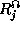, 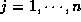 and takes a value
from the label set .
Define . Now, let the domain knowledge vector obtained
for different
image be , and the feature measurement vector for
regions in the segmented image at resolution be . Analogous
to [58] we
assume that the conditional probability of , given
and is a MRF, namely,
The measurement is made on , which itself may not
be a good segmented image, hence we need to refine by
merging regions depending on to form a better
segmented image. Details are pictorially depicted in Figure
1 and described in Section 5. Now, the
image interpretation problem is posed as
a MAP estimation problem, namely, maximizing the a posteriori probability of the
interpretation labels conditioned on the domain knowledge
and the measurements made on the segmented image , namely
The problem of interpretation reduces to the problem of minimizing the
energy function . The energy
function is constructed such that it takes a minimum value when the
interpretation labels are consistent with the knowledge and
the measurements made on . Simulated annealing algorithm
[65] is used to minimize the energy function at each
resolution, details regarding the construction of the energy function
are given in Appendix 3 and the Simulated annealing algorithm
is given in Appendix D.
We obtain from Section 2 using MRF Gibbs equivalence relation,
The maximization of (3) or equivalently the minimization
of the energy functional results in interpretation of the
given scene. Now,
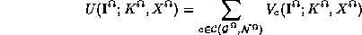
where 's are the clique functions which need to be constructed
using the domain knowledge and the measurements made on the segmented image .
Minimization of is equivalent to the minimizing
the linear combination of the clique function
.
The construction or designing of the clique function
is given in the
following section.
The clique function should be constructed
such that the interpretation of the region is consistent with the domain
knowledge and the measurements . The clique function should decrease
when the interpretation labels are consistent with the domain knowledge thus
resulting in a decrease of the energy function. This means that the interpretation of the
image that is most consistent with the domain knowledge and measurement
will have minimum energy.
Let c be an arbitrary single node clique corresponding to the region , with a single node
. Let be the
corresponding clique function. Let there be features associated
with measurement . Assume these measurements to be
independent, then the clique function
can be defined as
where are positive constants called weights, such that and
is the basis function associated with the feature i, which satisfies the requirement of the clique function, namely, it should
take a small value when the interpretation labels are consistent with the domain knowledge and the measurements. Now, the construction of the clique function
reduces to the construction of a basis function.
The choice of
the basis function could come from
suitably modified to adhere to the requirement mentioned above, or we could use a
piecewise linear basis function as shown in Figure 4.
The basis function is defined
as where x is the independent variable and a, b, c, d
are the corner points which depends on the feature that is being considered. A sample basis function is defined as in (4).
Figure 4: Linear piecewise basis function
There is nothing special about (4), any function which has
the form shown in Figure 4 can be used in place of
. For example a variation of sigmoidal
can be used. The plot of this function is given in Figure 5.
Clique functions of single node clique face the drawbacks mentioned
earlier, namely they could result in wrong interpretation if the low level
vision task is performed erroneously. To overcome this we need to use
clique functions for multiple node cliques.
The construction of a multiple node clique function is similar in philosophy to the single node clique except that
it is a little more complicated with two types of basis functions. The first one is the same as that of
single node clique which depends on the feature measurements and the second part depends on the
spatial constraints ( like a car can be in the neighborhood of a road but not in the
neighborhood of sky).
Let c be a multiple node clique for example with representing the node and
representing the
interpretation label of the node and let be the measurements made on the node . The clique function for c can
be defined as
Feature selection is an important aspect involved when dealing with the
problem of image interpretation. Though nothing can be said about the
choice of the features that should or can be used for the purpose of
image interpretation, we suppose that certain features are more important
than others and these are image dependent, for example average grey level
value may make no sense if the image from which knowledge was acquired
and the image to be interpreted are images taken under different lighting
conditions, perimeter and area make no sense if the image from which knowledge was
acquired and the image to be interpreted are of a scene positioned at a
different distance from the sensor capturing the scene. When one talks about
useful features, one is inherently assuming certain likeliness in the
image from which knowledge was generated and the image which is to be interpreted.
This is a major handicap and we feel it is a worthwhile effort to look into
these facts, namely, which feature is best suited for a given image, and what are
the underlying assumptions that one is making when a feature is chosen. One can with
confidence say that features which are invariant under certain operations may
be more useful than others. For example, features that are obtained as
ratio of other features may be useful even when the two images (image
from which knowledge was acquired and image to be interpreted) are scaled
versions of each other. Another example which would work under different lighting
conditions is the contrast in the grey levels between two adjacent regions.
In this section we look at a few of
features that can be employed for the purpose of image interpretation.
Features can be basically classified as primary and secondary. Primary
features are those features that need to be necessarily measured from the
segmented
image and secondary features are those that can be calculated or obtained
from the
primary features without requiring any direct measurements.
The
advantage of using secondary features is that they more often
happen to be ratios
and hence do not usually get affected over scales, while the primary
features vary with lighting conditions and scales.
Nevertheless, one can still use these non-ratio features
keeping in mind as to how the features are affected over
scales and accordingly modifying them at the required scale.
The secondary features are nothing but shape descriptors and are simply combinations
of primary features or size parameters, arranged so that their dimensions cancel out.
Length/Breadth for example gives us the aspect ratio, and changing the size of the feature
does not change the numerical value of the aspect ratio. There are many dimensionless
expressions (formed from the combinations of the size parameters), but only a few are
relatively common combinations, but as mentioned before even these are plagued by an
absolute inconsistency in naming conventions [66].
Compactness
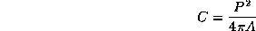
Orientation
where, ,
,
and
,
,
,
,
Boundary length
The length of the boundary common to two adjoint regions
I and J is given by
where, is the boundary of region I,
is the boundary of region J and
is the boundary common to regions I and J
Contrast
where, is the average grey value of the region I,
is the average grey value of the region J
Roundness
Aspect Ratio
Convex area and area are best described through Figure 6.
The region C gives a measure of the area of a segment while the convex
area is obtained by summing A, B, C, D, E, F, G, H, and I. Convex perimeter
is defined as the length of the hashed line. The secondary
features associated with these features are convexity and solidity are
as defined below
Figure 6: Area and Convex area
Convexity
Solidity
Extent
Length and width make more sense when the body is rigid, on the other
hand, if the object is really a worm or a noodle that is flexible, and
the overall shape is an accident of placement, it would be much more
meaningful to measure the length along the fiber axis and the width
across it. To distinguish from length and width these are sometimes
called fiber length and fiber width. Curl and Elongation are the
secondary features that are associated with these features.
Integration in vision literature essentially means a scheme in which
each of the module involved in the combined process helps itself by
helping the other modules. Inter and intra module integration has been
used with good success in the vision literature [67,68,69,70,71]. This and the
additional fact that the process of segmentation and interpretation are
related is a clue enough to think of a scheme which integrates the
modules involving segmentation and interpretation.
To our knowledge the earliest work advocating the integration of segmentation and
interpretation is of Tenenbaum [60]. In this section we
propose a scheme where segmentation and interpretation
modules work sygernatically in a multiresolution framework.
Multiresolution again has been used with great affect in computer vision
and image processing problems. It is basically a way of representing
data, so as to get some computational efficiency. It can be showed that
one can achieve a computational speed up of
[72]. We use multiresolution in our formulation of the
problem and it turns out that we need to use only of the
actual data points and in addition this formulation helps in refining
the segmented image obtained from the k-means segmentation
algorithm.
Given:
the apriori knowledge and
, the scene to be interpreted, defined on
Construct
,
, , ,
, , 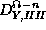, , , using a wavelet filter.
Obtain the segmented image of using k-means clustering method and refine the
segmented image using , and .
Segmenting and refining at the coarsest resolution .
Construct the histogram of , choose dominant peaks - let there be
B such peaks. These are the chosen values of the bins in the k-means algorithm used for clustering.
k-means clustering algorithm will produce say some M segments
using the optimality criteria,
such that the pixels which are within
a region are as close as possible to the centroid of the region.
Refine the regions or segments obtained from Step (ii) using the
difference images , and
. The refinement procedure is best described by looking at
Figure 7.
Figure 7: To describe the process of refining segmentation
For example if is not
zero at the pixel location it means that there is an diagonal edge
present at the pixel location . The presence of an edge means that
the pixels and should not belong to the same segment.
If the pixels and
belong to different clusters they are not touched, else
the pixel is assigned a new segment which is not the same as
that occupied by pixel . The assignment of the segment label is based
on the nearest neighborhood scheme, the pixel is assigned to that
segment whose centroid
is closest to the grey level value of the pixel , namely .
Segmenting and refining at other than the coarsest resolution (say ).
quad tree interpolate the segmented image at to resolution. Use
this information as the initial boundaries of the segmented image, plus also transfer the values of the
bins from resolution
use the interpretation labels obtained from the previous resolution to initialize the interpretation labels at this resolution.
Repeat a.ii and a.iii
The segments are interpreted using the knowledge base and the measurements made on the segmented
image by constructing an energy function and minimizing it using some relaxation
algorithm (in our simulations we use simulated annealing algorithm).
Any region that goes uninterpreted is merged with one of the
segments which is adjacent to the uninterpreted segment depending on
the probability criteria (7).
If region k has no interpretation and if l,m are the regions
adjacent to region k,
then region k is given the interpretation label of the region if
> .
If this is not the finest resolution - then the interpretation labels at this resolution
are transfered to the next finer resolution and Step (3b) is repeated, until the
finest resolution.
Experiments were carried out to validate the proposed scheme of joint
segmentation and image interpretation on real outdoor (road images) and indoor (computer images)
images of
size which were either captured using the
QuickTake100 digital camera (Figures shown in Section
6.1) or captured using an aim and shoot Kodak
Pro 111 camera and then scanning using the HP Color Scanner
(Figures in Section 6.2).
Figures
8a, 9a and 10a are the original images of
the scene to be interpreted and 8b,
9b and 9b are the wavelet transformed images of
8a, 9a and 9a respectively using the
4 tap Daubecius filter coefficients. The is segmented using the k-means clustering algorithm and
refined using , and
as described in Section 5 (See
Figure 2). The resulting image is displayed in Figure
8c, 9c and 9c. The final segmented image
is shown in Figure 8d, 9d and 9d
respectively for the scenes shown in 8a,
9a and 9a. The final interpreted image is shown in Figure
8e, 9e and 9e.
Table: Knowledge base used for the road images (Section 6.1)
Observe that in Figure 8d the segmentation is good and
the interpretation does no merging, it labels each region differently as
shown in Figure 8d, but in Figure 9d the
segmentation is not perfect, for example the road is in fact divided
into 2 different segments, but the interpretation block interprets both
the segments as road and this is seen in Figure 9e.
This is one an indication that segmentation and interpretation cannot
work independently, they work best when they work sygernatically. This
aspect of modular integration is seen in Figure 10e,
where the segments corresponding to sky (see Figure 10d )
are all merged into a single segment after interpretation. This two
examples show that the joint scheme of segmentation and interpretation
can never be worse that when segmentation and interpretation work as
individual blocks.
Figure 8: (a) Original scene image of size ,
(b) Wavelet Transformed image,
(c) Initial Segmentation (after k-means clustering) of size ,
(d) Final Segmentation of size ,
(e) Final Interpretation, and the interpretation legends
Figure 9: (a) Original scene image of size , (b) Wavelet Transformed image, (c) Initial Segmentation (after k-means clustering) of size , (d) Fina
l Segmentation of size
(e) Final Interpretation, and the interpretation legends
Figure 10: (a) Original scene image of size , (b) Wavelet Transformed image, (c) Initial Segmentation (after k-means clustering) of size , (d) Fin
al Segmentation of size
(e) Final Interpretation, and the interpretation legends
This is the second set of simulation results on real out door images.
These scenes were captured using an aim and shoot Kodak Pro 111 camera
and the developed photographs were scanned using the ScanJet III color
scanner. Figure 11a is the image used for knowledge
acquisition and 11b is the wavelet transformed image
of Figure 11a which is used to
acquire knowledge. The procedure involves segmenting the wavelet transformed image
and refining it using the difference images (Section 5) and then manually merging segments
(Section A) Figure 11c gives the final image
(segmented and manually merged using details described in Section
A). The acquired knowledge is tabulated in Table
2.
Figure 12a is the image to be interpreted using the
knowledge acquired and tabulated in Table 2. Figure
12b is the wavelet transformed image and
12c is the output of the k-means segmentation algorithm
and Figure 12d is the resultant image obtained after
refining the k-means segmented image using the difference information
present in the Figure 12b. Figure 12d
gives the final interpreted image. The key to this image is also given in
Figure 12. In this example, the interpretation merges segments
of sky by assigning them labels corresponding to sky. In fact there are three
different segments which have been assigned the label sky as seen in Figure
12e.
Figure: (a) Original scene image of size ,
(b) Wavelet Transformed image, (c) Manually segmented image to obtain knowledge(shown in Table 2)
Table: Knowledge associated with Figure 11c (Section 6.2)
Figure 12: (a) Original scene image of size ,
(b) Wavelet Transformed image,
(c) Initial Segmentation (after k-means clustering) of size ,
(d) Final Segmentation of size ,
(e) Final Interpretation, and the interpretation legends
Figures 13a and 14a are images captured in
the laboratory using the Pulnix CCD camera with zoom. The interpretations
that we are looking forward for are (i) background, (ii) screen, (iii)
shoebox, (iv) cover and (v) keyboard. Figure 13b and
14b are the wavelet transformed images of Figures
13a and 14a respectively. Figures
13c and 14c are the out put of the k-means
segmentation algorithm after refinement of Figures 13a and
14a respectively, Figures 13d and
14d are the final segmentation and 13e and
14e are the finally interpreted images of Figures
13a and 14a respectively. The knowledge
base that was used for the purpose of interpretation is shown in Table
3.
Table 3: Knowledge base used for the indoor computer images
As seen earlier the interpretation helps in refining the segmentation and
hence producing a better seggementation. Figure 13d shows
the shoebox as three segments and the keyboard as two segments, while
after interpretation the three segments of the shoebox get labeled as
shoebox (see Figure 13e) and hence form a single segment,
similarly the two segments corresponding to the keyboard get labeled as
keyboards and hence forms a single segment. The spot above the shoebox
looks like an rectangular stip and hence gets labelled as a shoebox,
though it is because of a shadow formed by a black cloth kept behing the
computer while capturing the image. A similar thing is seen in Figure
14e where the background (above the keyboard and right of
the monitor cover) gets labelled as screen because of the shape which
looks more like a screen. But for these the labeling is correct in both
the examples and the final interpreted images along with the keys are
given in 13e and 14e corresponding to
13a and 14a respectively.
Observe that in Table 3 there are two entries for the
background label. These two entries are essential, else the bottom
segment (the segment below the keyboard and the shoebox) in
14d doesnot get labeled as background, because the fact
that the areas of background are significantly different for the two
entries and this fact disables the interpretation block from recognising
it as a background.
Figure 13: (a) Original scene image of size ,
(b) Wavelet Transformed image,
(c) Initial Segmentation (after k-means clustering) of size ,
(d) Final Segmentation of size ,
(e) Final Interpretation, and the interpretation legends
Figure 14: (a) Original scene image of size ,
(b) Wavelet Transformed image,
(c) Initial Segmentation (after k-means clustering) of size ,
(d) Final Segmentation of size ,
(e) Final Interpretation, and the interpretation legends
In this report we have addressed the problem of image interpretation in
a multiresolution framework without assuming the availability of the
segmented image. The result of the proposed scheme is the fact that we
obtain a better segmented image in addition to the
interpretations. The scheme is validated using some real images.
The fact that we have worked on images of size which are multiples of
2 is no constraint is shown vide Appendix E.
There are a couple of issues that one may want to look at, though they
may not be directly related to the problem of image interpretation:
(a) One is not sure how to choose the number of bins while
initializing the k-means clustering algorithm, a remark to this effect
is given in Appendix C.2. (b) The other place where effort needs
to be put is in choosing the features that could be possibly used in
image interpretation. The choice seem to be dependent on the type of the
image and some remarks to this affect are given in Section 4.
One could think of using an additional cue in the form of color to enhance the
interpretation scheme. The other effort could go towards construction of
a single energy function which would do both segmentation and image interpretation similar to
[73], but in a multiresolution framework.
We would like to thank the financial support extended by the MHRD
(India) project on Computer Vision. The first author would like to thank
the Signal Processing and Artificial Neural Networks
laboratory for the computational
facilities and its members for the fantastic environment.
This section, though written keeping the problem of image interpretation
in view, is useful in any problem where knowledge base is an essential
prerequisite.
Here we present an user interactive scheme for knowledge acquisition which
has also worked well for our problem. The user interaction is through
the public domain image display software XV, which comes with
the Slackware distribution of Linux in the xap series.
The steps involved in acquiring knowledge can be enumerated as (i) use
a known segmentation algorithm to obtain a crude segmentation, (ii) merge
regions that could have possibly been classified as different segments manually
(iii) assume the segmented image obtained after manually merging as the required
segmented image and (iv) extract the required knowledge from the segments thus obtained.
The essential idea is to segment the given image using one of the crude
segmentation algorithm.
We demonstrate the procedure involved in
acquiring knowledge with the help of an example image
(Figure 15) as the image to be segmented.
Figure 15: Image from which knowledge is to be acquired
We use the k-means segmentation algorithm to segment Figure
15, please note that one could use any other segmentation
algorithm and there is nothing special about using the k-means except
that it is simple to implement and does a good segmentation. We start by
constructing the wavelet transform of the image (see Figure 16).
The first quad of the wavelet transformed image is segmented. This is done to keep
in tune with the scheme described in Figure 1 where we have the
segmented image being refined using the difference images (the other 3 quads).
One
could have as well applied the k-means clustering algorithm on Figure
15. The result of k-means segmentation using 3 bins is
shown in Figure 17.
Figure 17: The k-mean output as applied to the first quad of Figure
Figure 18: XV's color editor showing all the details. The color map editing
(top left) shows all the labeled regions - 21 in all
The regions resulting from the k-means segmented (Figure
17) are labeled using any labeling scheme, in this
report we have used a labeling algorithm that was available in the laboratory.
Figure: (a) The labeled image with 21 regions (see Figure 18)
and (b) portion of the color editor which shows the various colors
There are in all 21 regions as seen in the XV's color editor
(Figure 18). Figure 19 shows the output of
the labeling module.
Now, we need to manually merge the segments to get the desired segmented
image (undoubtedly the dirtiest part to do - one has to go through this,
especially because segmentation is a process that depends on
interpretation and which is the problem that is being
addressed!), which can be
used for acquiring knowledge.
The color editor is shown in Figure 18.
Initially the given labeled image
(Figure 19) is assigned a random color to each of the regions
by clicking on the button
.
This operation will assign a different color to each of the regions. Now we describe
how to merge two regions - in the language of the XV color editor
this means - how to assign the same color to two regions in order to merge them.
Now look at the hand portion of the image (Figure 19, lower left hand corner), the
hand is actually segmented into two regions, we require
that they be merged. Assumed
that you are viewing Figure 19 using XV,
now take the mouse arrow
to the lighter color region in the hand and click the middle button.
You will observe that
one of the colors in the color editor gets activated (activation means a square is formed
on the color corresponding to the color on which one clicks the middle button).
See Figure 19b, the color block 18 is activated.
You need to remember it - the block 18 . Now click on the color (the
darker part of the hand) that you want to assign to the the presently
activated color (block 18). Now a separate block is selected in this
case the block number 15. Now place the mouse on block 18 and press the
right mouse button. You will observe that now both the blocks (15
and 18) have the same color and also the two regions of the hand have
merged (See Figure 20b and Figure 20a
respectively).
The procedure described in this section is carried out until all the
segments that belong to the same segment (you are the judge!) are merged.
The final merged image is shown in Figure 21a and the corresponding
color editor map is shown in 21b. It can be seen that the 21 segments
as seen in Figure 19 have been finally merged into 9 segments (Figure 21).
Figure: (a) The image showing two regions merged - observe the hand portion and compare
it with Figure 19 and (b) The color editor after merging
Figure: (a) The final labeled image (see Figure 18 from where we
started before manually merging regions)
and (b) portion of the color editor which shows the various colors
Table 4 gives the final labels of the segmented images and
Table 5 gives the details of the acquired knowledge. The details
of the knowledge given are basically the primary features and the other features
like the form factor, compactness can be estimated using these primary features
and are hence rightly termed as the secondary features. The features that have
been given in Table 5 are : (a) area of the segment, (b) average
grey level of the region, (c) perimeter of the region, (d) and (e) the region
position in terms of mass center (f) the variance of the
grey levels in the region.
Table 4: Details of image used for knowledge acquisition
Probably the most fundamental problem blocking knowledge based vision
development has been lack of stable low-level vision algorithms that can
produce a reasonable and useful intermediate representation. The
segmentation problem is very difficult and ill-formed problem. There is
no ideal or correct segmentation because that is a function of the goals
of interpretation system. The 2D appearance of objects and their parts
are affected by variation in lighting, perspective distortion, varying
point of view, occlusion and shadows. In addition, objects and their
parts may or may not be usually distinguishable depending on their color
and background. Thus, one cannot predict what initial image information
can be extracted that is relevant to the recognition of objects. The only
thing that one can count on unfortunately is that these processes are
quite unreliable, certainly some useful information can be extracted but
many errors are bound to occur. There is probably no optimal solution in
any non-trivial image.
Usually there will be no setting of the parameters for the extraction
process which will exactly extract the desired image events without also
generating additional non-optimal or undesired events. For a given
parameter setting, a region segmentation may be too fragmented in one area
of the image, while over-merged in another area of the image. As
parameters are varied the partition will change but will never
produce a result that is optimal or near optimal throughout the scene. The set
of unavoidable problem associated with low-level process requires that
the high-level process are capable of significantly reorganizing this
data during interpretation process. Since the segmentation process is
inherently unreliable, we accept the need to re-segment (possibly a
many times) portions of the image under control of the
high-level process (interpretation driven segmentation).
We find that the availability of data in the public domain
for the purpose of image interpretation is scarce. In spite of search
engines like
http://altavista.digital.com, http://www2.infoseek.com,
http://www.stars.com and others, we could not obtain
images on which we could test the scheme proposed by us.
We had to resort to generate our own data (now available at
http://144.16.100.30/images/Interpretation) with the help of the digital
QuickTake200 camera and the combination of Kodak aim and shoot and color scanner.
The other problem is with the knowledge database
generation or acquisition which seems to have been sidelined. We mention in this
report in detail a scheme on how to acquire knowledge (see Section A).
k- means clustering algorithm [75] is a technique similar
to vector quantization with squared error cost function developed my
MacQueen in 1967. The basic idea of k-means clustering algorithm is
minimum distortion partitions and centroids.
The goal of the k-means clustering algorithm is to produce a partition
of the training alphabet consisting of all vectors in the training
sequence. The corresponding alphabet will then be the
collection of the Euclidean centroids of the set , that is, the
final reproduction alphabet will be optimal for the final partition
(but the final partition may not be optimal for that final
reproduction alphabet except when ). To
obtain , we can think of each as a bin in which to
place the training sequence vector until all are placed. Initially we
start by placing the first N vectors in a separate bin ,
. We then proceed as follows: at each iteration, a new
training vector is observed, and the for which the
distortion between and the centroid is minimized
and then the new vector is added to the bin . Thus at each
iteration, the new vector is added to the bin with the closest centroid,
so that the next time, this bin will have a new centroid.
This operation is continued till all sample vectors are exhausted.
There are a number of ways in which the bins can be initialized.
first N vectors
: choose the first N vectors of the training vector and assign the values
taken by the vectors to the bins
histogram
: calculate the histogram of the image and select the N local maximas and
assign them as the initial bin values.
by splitting
:
Step 0
Initialization: Set M=1 and define , the center
of the entire training set.
Step 1
Given the reproduction alphabet or the bins containing
M vectors split each vector into 2 close vectors
where is a fixed perturbation vector. Now has
2M vectors ( ). Replace .
Step 2
Is M=N(the required number of bins)? If yes, set
and halt. is then the initial reproduction vector for the N initial
bins. If not run the algorithm for an M level quantizer on to
produce a good reproduction alphabet and then return to Step 1.
There is no strict way of choosing the number of bins. The choice should be
such that the image doesnot get over-segmented and at the same time it should not
be under-segmented. Actually, some portions of the image are bound to be
over-segmented and some regions under-segmented. May be one can think of a scheme
where the number of bins vary from one portion of the image to another portion
of the image - the choice of the number of bins will be a function of the
busyness of the image.
Annealing is the physical process of heating up a solid until it melts,
followed by cooling it down until it crystallizes into a state with
perfect lattice. During this process, the free energy of the solid is
minimized. Practice shows that the cooling must be done carefully in
order not to get trapped in locally optimal lattice structure with crystal
imperfections. In combinatorial optimization problems a similar process
can be defined and is being used extensively by formulating the problem
as that of finding a solution with minimal cost among the potentially
very large number of solutions. By introducing similarity between the
cost function and free energy and between solutions and physical states,
a solution method based on the simulation of the physical annealing
process can be introduced, this resulting scheme is called Simulated
Annealing.
Any solution scheme that aims for the a global mimina should have three
capabilities, (i) it should be able to span whole of the solution space
(it should be able to take large jumps on the solution space), (ii) it
should also be able to take short steps (should be able to take short
jumps in the solution space) and (iii) should be able to jump out of
local minimas (should be some randomness incorporated).
Simulated annealing algorithm and genetic algorithm are two well know
global optimal solution seekers which show these properties.
These properties of large jumps and short jumps in simulated annealing
algorithm are captured by the temperature term that comes into being in
the algorithm. A neat description of this aspect is given below
Definition of temperature and energy:
A particular set of molecules are related to those in the previous
trial in the sense that each molecule has moved somewhere in the
neighborhood of movement from which new trial molecules are chosen is
called temperature. The relation of temperature to this definition of
molecular movement from one time increment to the next results in a
simple physical picture: the degree of movement is analogous to the
average kinetic energy of the system, which is related to the physical
temperature. Thus a very high temperature means that the molecules are
chosen at random from quantum state and corresponds to a global scan
over the molecular phase sphere. A low temperature means that there is
only a slight difference from the previous configuration and
corresponding to a scan about a local are in phase space to find a local
minimum.
The algorithm is very familiar to people working in the area of computer
vision literature and one can refer to Aarts and Korst [76]
for more details. Nevertheless we give the pseudo code of simulated
annealing algorithm for the sake of completion.
This appendix is mainly included to stress the fact that though we
have in this thesis considers images to be of size of , this
is not to be considered as a restriction for the use of multiresolution. Here
Peleg et al [77] show how a non image pyramid
can be constructed with arbitrary size reductions between levels.
Pyramids are data structures used to store and process images at multiple
levels of resolutions. Use of pyramids with dimensions given by power of 2
is an unnecessary restriction on the construction of the pyramids
[77]. The
question of what size levels are most appropriate are not known but the
size depends on the application and empirical experiences. Here we show
how pyramids of arbitrary size reductions between levels can be
constructed. The reduction level can be different in each direction and
differ between levels, to adapt to given application. The basic idea is
the use of spatial re-sampling technique used in graphics related to
anti-sampling.
For simplicity we look at the case of one dimensional re-sampling
Given a vector of N pixels reduce it to a
vector of M pixels. Both and M
<N can be looked at, but we will concentrate on M < N.
Assume M, N so that is small. Then nearly all for j
in the appropriate range will have the value , with the exception
of the two extreme . More generally, we can regard the output
range 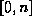 split up into M subintervals with 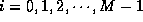. The same region is also split up into N subintervals with . The coefficient
is the total length of the partition of the interval
that intersects the interval .
In uniform sampling, all input pixels make the same contribution to
output pixels, but this can be generalized to permit each input pixel to
have an adaptive forward weight, so that pixel j with value ,
contributes a total of to the W's. The weights should satisfy
the normalization condition , reflecting the
desire to have each of the M output pixels to receive unity in
contribution from V's. We use the same principle as in the previous
section to develop a linear re-sampling formula
but now represents the length of that portion of the interval
that intersect
. Note that the input interval number j has length, and the
input intervals subdivide the output range .
Given a vector
and the weights
, form a interpolation function
where,
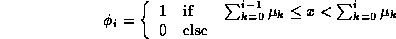
The samples
are then obtained from the sampling formula
, where,
Note that satisfy
the total contribution of any given to all W's is
namely,
the sum of all contribution to any given is 1
namely,
H. Niemann I. Hofmann and G. Sagerer.
``Model based interpretation of image sequences from the heart ''.
In Proceedings of an international workshop held in Amsterdam,
Holland, 1985.
C.J. Taylor T.F. Cootes, A. Hill and J. Haslam.
``Use of active shape models for locating structure in medical
images ''.
Image and Vision Computing, pages 355--365, 1994.
J. Desachy.
``A knowledge-based system for satellite image interpretation ''.
In Proceedings 11th IAPR International Conference on Pattern
Recognition, pages 198--200, 1992.
J.D. McKendrick and M. Lybanon.
`` Knowledge-based interpretation aids to the navy oceanographic
image analyst''.
In Proceedings: Image Understanding Workshop, pages 61--63,
1985.
K. Dutta D. Kuan, H. Shariat and P. Ransil.
`` A constraint-based system for interpretation of aerial
imagery''.
In Second International Conference on Computer Vision, 1988.
G. Giraudon P. Garnesson and P. Montesinos.
``An image analysis system, application for aerial imagery
interpretation ''.
In Tenth International Conference on Pattern Recognition, 1990.
Klamer Schutte.
Knowledge Based Recognition of Man-Made Objects.
PhD thesis, University of Twente, P.O. Box 217 7500 AE Enschede The
Netherlands, February 1994.
J. Brolio J. Griffith A.R. Hanson B.A. Draper, R.T. Collins and E.M. Riseman.
`` Tools and experiments in the knowledge-directed interpretation
of road scenes''.
In Image Understanding Workshop, 1987.
J.K. Aggarwal and N. Nandhakumar.
``Multisensor Fusion for Automatic Scene Interpretation ''.
Springer-Verlag, Ramesh C. Jain and Anil K. Jain, Analysis and
Interpretation of Range Images, 1990.
T.M. Strat and M.A. Fischler.
A context-based recognition system for natural scenes and complex
domains.
In Image Understanding Workshop, pages 456--472, 1990.
M. Hild and Y. Shirai.
Interpretation of natural scenes using multi-parameter default models
and qualitative constraints.
In ICCV93, pages 497--501, 1993.
G. Giraudon V. Clement and S. Houzelle.
``Interpretation of remotely sensed images in a context of
multisensor fusion ''.
In Second European Conference on Compute Vision, 1992.
C.-C. Chu and J.K. Aggarwal.
`` The interpretation of laser radar images by a knowledge-based
system''.
Machine Vision and Applications, pages 145--163, 1991.
S. Towers and R. Baldock.
``Application of a knowledge-based system to the interpretation of
ultrasound images''.
In Ninth International Conference on Pattern Recognition, 1988.
M. Takahashi K. Sugimoto and F. Tomita.
``Scene interpretation based on boundary representations of stereo
images ''.
In Ninth International Conference on Pattern Recognition, 1988.
J.E.W. Mayhew T.P. Pridmore and J.P. Frisby.
`` Exploiting image-plane data in the interpretation of edge-based
binocular disparity''.
Computer Vision, Graphics, and Image Processing, pages 1--25,
1990.
S.B. Serpico A. Milano, F. Perotti and G. Vernazza.
``A system for the interpretation of 3-d moving scenes from 2-d
image sequences ''.
International Journal of Pattern Recognition and Artificial
Intell., pages 765--796, 1991.
R. Hofmann-Wellenhof J. Smolle and H. Kerl.
``Pattern interpretation by cellular automata (pica)- evaluation of
tumour cell adhesion in human melanomas ''.
Analytical Cellular Pathology, pages 91--106, 1994.
R. Evangelista and O. Salvetti.
``A morphometric and densitometric approach to image interpretation
''.
Pattern Recognition and Image Analysis, pages 305--310, 1993.
Finn Verner Jensen, Henrik I. Christensen, and Jan Nielsen.
Bayesian methods for interpretation and control in multi-agent
vision systems.
Applications of Artificial Intelligence X: Machine Vision and
Robotics, SPIE Proceedings Series, 1708, 1992.
W. Bishop Mann and T.O. Binford.
``An example of 3-d interpretation of images using bayesian
networks ''.
In Proceedings DARPA Image Understanding Workshop,, 1992.
J. A. Modestino and J. Zhang.
``A Markov Random Field Model Based Approach to Image
Interpretation ''.
IEEE Tran. on Pattern Analy and Mach. Intell., pages 606--615,
1992.
I. Y. Kim and H. S. Yang.
`` Efficient image labeling based on markov random field and error
backpropagation network''.
Pattern Recog., pages 1695--1707, 1993.
S. K. Tadikonda M. Sonka and S. M. Collins.
`` Genetic algorithms in hypothesize-and-verify image
interpretation''.
Proc. SPIE - Sensor Fusion VI, pages 236--247, 1993.
I. Y. Kim and H. S. Yang.
`` An integration scheme for image segmentation and labeling based
on markov random fields''.
IEEE Trans. on Pattern Anal. and Machine Intell., pages 69--73,
1996.
S. Mallat.
``A theory for multiresolution signal decomposition: the wavelet
representation''.
IEEE Trans. on Pattern Anal.and Machine Intell., pages
674--693, 1989.
T. Poggio E. B. Gamble, D. Geiger and D. Weinshall.
``Integration of vision modules and labeling of surface
discontinuities ''.
IEEE Tran. on Sys. Man and Cybernatics, pages 1576 -- 1581,
1989.
W. Hoff and N. Ahuja.
``Surfaces from stereo: Integration feature matching, disparity
estimation and contour detection ''.
IEEE Tran. on Pattern Analy and Mach. Intell., pages 121 --
136, 1989.
S. P. Clifford N. M. Nasrabadi and Y. Lin.
Integration of stereo vision and optical flow by using an energy
minimization approach''.
J. Opt. Soc. of America, pages 900--907, Jun 1989.
K. Sunil Kumar and U. B. Desai.
``New algorithms for 3D surface description from binocular stereo
using integeration''.
J. of the Franklin Institute, pages 531--554, 1994.

 ,
(b) Wavelet Transformed image,
(c) Initial Segmentation (after k-means clustering) of size
,
(b) Wavelet Transformed image,
(c) Initial Segmentation (after k-means clustering) of size  ,
(d) Final Segmentation of size
,
(d) Final Segmentation of size  ,
(e) Final Interpretation, and the interpretation legends
,
(e) Final Interpretation, and the interpretation legends
 , (b) Wavelet Transformed image, (c) Initial Segmentation (after k-means clustering) of size
, (b) Wavelet Transformed image, (c) Initial Segmentation (after k-means clustering) of size  , (d) Final Segmentation of size
, (d) Final Segmentation of size  (e) Final Interpretation, and the interpretation legends
(e) Final Interpretation, and the interpretation legends
 , (b) Wavelet Transformed image, (c) Initial Segmentation (after k-means clustering) of size
, (b) Wavelet Transformed image, (c) Initial Segmentation (after k-means clustering) of size  , (d) Final Segmentation of size
, (d) Final Segmentation of size  (e) Final Interpretation, and the interpretation legends
(e) Final Interpretation, and the interpretation legends
 ,
(b) Wavelet Transformed image, (c) Manually segmented image to obtain knowledge(shown in Table 2)
,
(b) Wavelet Transformed image, (c) Manually segmented image to obtain knowledge(shown in Table 2)
 ,
(b) Wavelet Transformed image,
(c) Initial Segmentation (after k-means clustering) of size
,
(b) Wavelet Transformed image,
(c) Initial Segmentation (after k-means clustering) of size  ,
(d) Final Segmentation of size
,
(d) Final Segmentation of size  ,
(e) Final Interpretation, and the interpretation legends
,
(e) Final Interpretation, and the interpretation legends
 ,
(b) Wavelet Transformed image,
(c) Initial Segmentation (after k-means clustering) of size ,
(d) Final Segmentation of size
,
(b) Wavelet Transformed image,
(c) Initial Segmentation (after k-means clustering) of size ,
(d) Final Segmentation of size  ,
(e) Final Interpretation, and the interpretation legends
,
(e) Final Interpretation, and the interpretation legends
 ,
(d) Final Segmentation of size
,
(d) Final Segmentation of size  ,
(e) Final Interpretation, and the interpretation legends
,
(e) Final Interpretation, and the interpretation legends

 be the image at the finest resolution, defined over the 2D
lattice of size
be the image at the finest resolution, defined over the 2D
lattice of size  . The problem of
interpretation involves
. The problem of
interpretation involves
 and
and
 along with the domain knowledge (given) interpret the image
along with the domain knowledge (given) interpret the image  .
.
 image it is
enough if we interpret a image.
image it is
enough if we interpret a image.
 [
[ =,
the low pass filtered image and
=,
the low pass filtered image and  ,
,  ,
,  the difference image each of size
. Figure
the difference image each of size
. Figure  , where
, where  (
( ) corresponds to the difference image obtained
when
) corresponds to the difference image obtained
when  is filtered by a high pass filter along the rows
(columns) and low pass filtered along the columns (rows).
is filtered by a high pass filter along the rows
(columns) and low pass filtered along the columns (rows).
 , ,
, ,
 ) as described in Section
) as described in Section 
 being represented by the n regions in the
segmented image and the edges representing the connectivity of the
regions. Let , , ,,
being represented by the n regions in the
segmented image and the edges representing the connectivity of the
regions. Let , , ,,
 be the possible labels ( no
interpretation label, and are the m
interpretation
labels). Next, let be the random variable associated with
the region 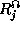, 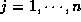 and
be the possible labels ( no
interpretation label, and are the m
interpretation
labels). Next, let be the random variable associated with
the region 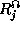, 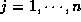 and  takes a value
from the label set .
Define . Now, let the domain knowledge vector obtained
for different
image be
takes a value
from the label set .
Define . Now, let the domain knowledge vector obtained
for different
image be  , and the feature measurement vector for
regions in the segmented image at resolution
, and the feature measurement vector for
regions in the segmented image at resolution  be
be  . Analogous
to [
. Analogous
to [ and
and  is a MRF, namely,
is a MRF, namely,
 , which itself may not
be a good segmented image, hence we need to refine
, which itself may not
be a good segmented image, hence we need to refine  by
merging regions depending on
by
merging regions depending on  to form a better
segmented image. Details are pictorially depicted in Figure
to form a better
segmented image. Details are pictorially depicted in Figure
 and the measurements made on the segmented image
and the measurements made on the segmented image  , namely
, namely
 and
the measurements
and
the measurements  made on
made on  . Simulated annealing algorithm
[
. Simulated annealing algorithm
[ made on the segmented image
made on the segmented image  .
Minimization of is equivalent to the minimizing
the linear combination of the clique function
.
Minimization of is equivalent to the minimizing
the linear combination of the clique function
 .
The construction or designing of the clique function
is given in the
following section.
.
The construction or designing of the clique function
is given in the
following section.
 should be constructed
such that the interpretation of the region is consistent with the domain
knowledge
should be constructed
such that the interpretation of the region is consistent with the domain
knowledge  and the measurements
and the measurements  . The clique function should decrease
when the interpretation labels are consistent with the domain knowledge thus
resulting in a decrease of the energy function. This means that the interpretation of the
image that is most consistent with the domain knowledge and measurement
will have minimum energy.
. The clique function should decrease
when the interpretation labels are consistent with the domain knowledge thus
resulting in a decrease of the energy function. This means that the interpretation of the
image that is most consistent with the domain knowledge and measurement
will have minimum energy.

 where x is the independent variable and a, b, c, d
are the corner points which depends on the feature that is being considered. A sample basis function is defined as in (
where x is the independent variable and a, b, c, d
are the corner points which depends on the feature that is being considered. A sample basis function is defined as in ( . For example a variation of sigmoidal
. For example a variation of sigmoidal
 with representing the node and
representing the
interpretation label of the node and let
with representing the node and
representing the
interpretation label of the node and let  be the measurements made on the node
be the measurements made on the node  . The clique function for c can
be defined as
. The clique function for c can
be defined as
 in the region R.
in the region R.


 the apriori knowledge and
the apriori knowledge and
 , the scene to be interpreted, defined on
, the scene to be interpreted, defined on
 ,
,
 ,
,  , ,
, , 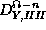, , , using a wavelet filter.
, ,
, , 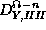, , , using a wavelet filter.
 using k-means clustering method and refine the
segmented image using
using k-means clustering method and refine the
segmented image using  ,
,  and
and  .
.
 .
.
 , choose dominant peaks - let there be
B such peaks. These are the chosen values of the bins in the k-means algorithm used for clustering.
, choose dominant peaks - let there be
B such peaks. These are the chosen values of the bins in the k-means algorithm used for clustering.
 and
and
 . The refinement procedure is best described by looking at
Figure
. The refinement procedure is best described by looking at
Figure  is not
zero at the pixel location it means that there is an diagonal edge
present at the pixel location
is not
zero at the pixel location it means that there is an diagonal edge
present at the pixel location  . The presence of an edge means that
the pixels
. The presence of an edge means that
the pixels  and
and  should not belong to the same segment.
If the pixels
should not belong to the same segment.
If the pixels  and
and
 belong to different clusters they are not touched, else
the pixel is assigned a new segment which is not the same as
that occupied by pixel
belong to different clusters they are not touched, else
the pixel is assigned a new segment which is not the same as
that occupied by pixel  . The assignment of the segment label is based
on the nearest neighborhood scheme, the pixel
. The assignment of the segment label is based
on the nearest neighborhood scheme, the pixel  is assigned to that
segment whose centroid
is closest to the grey level value of the pixel
is assigned to that
segment whose centroid
is closest to the grey level value of the pixel  , namely .
, namely .
 resolution. Use
this information as the initial boundaries of the segmented image, plus also transfer the values of the
bins from
resolution. Use
this information as the initial boundaries of the segmented image, plus also transfer the values of the
bins from  resolution
resolution
 which were either captured using the
QuickTake100
which were either captured using the
QuickTake100 the mass center
the mass center
 is segmented using the k-means clustering algorithm and
refined using ,
is segmented using the k-means clustering algorithm and
refined using ,  and
and
 as described in Section
as described in Section 


 ). To
obtain
). To
obtain  , we can think of each
, we can think of each  as a bin in which to
place the training sequence vector until all are placed. Initially we
start by placing the first N vectors in a separate bin
as a bin in which to
place the training sequence vector until all are placed. Initially we
start by placing the first N vectors in a separate bin  ,
,
 . We then proceed as follows: at each iteration, a new
training vector
. We then proceed as follows: at each iteration, a new
training vector  is observed, and the
is observed, and the  for which the
distortion between
for which the
distortion between  and the centroid is minimized
and then the new vector
and the centroid is minimized
and then the new vector  is added to the bin
is added to the bin  . Thus at each
iteration, the new vector is added to the bin with the closest centroid,
so that the next time, this bin will have a new centroid.
This operation is continued till all sample vectors are exhausted.
. Thus at each
iteration, the new vector is added to the bin with the closest centroid,
so that the next time, this bin will have a new centroid.
This operation is continued till all sample vectors are exhausted.
 . Set , replace and go to Step 1.
. Set , replace and go to Step 1.
 containing
M vectors split each vector into 2 close vectors
where is a fixed perturbation vector. Now has
2M vectors (
containing
M vectors split each vector into 2 close vectors
where is a fixed perturbation vector. Now has
2M vectors (  ). Replace .
). Replace .
 and then return to Step 1.
and then return to Step 1.
 , this
is not to be considered as a restriction for the use of multiresolution. Here
Peleg et al [
, this
is not to be considered as a restriction for the use of multiresolution. Here
Peleg et al [ of N pixels reduce it to a
vector
of N pixels reduce it to a
vector  of M pixels. Both and M
<N can be looked at, but we will concentrate on M < N.
of M pixels. Both and M
<N can be looked at, but we will concentrate on M < N.
 is small. Then nearly all for j
in the appropriate range will have the value , with the exception
of the two extreme
is small. Then nearly all for j
in the appropriate range will have the value , with the exception
of the two extreme  . More generally, we can regard the output
range 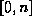 split up into M subintervals with 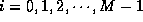. The same region is also split up into N subintervals with . The coefficient
. More generally, we can regard the output
range 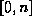 split up into M subintervals with 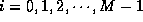. The same region is also split up into N subintervals with . The coefficient
 is the total length of the partition of the interval
is the total length of the partition of the interval  that intersects the interval
that intersects the interval  .
.
 ,
,
 for all V is 1,
for all V is 1,  to
output pixels, but this can be generalized to permit each input pixel to
have an adaptive forward weight, so that pixel j with value
to
output pixels, but this can be generalized to permit each input pixel to
have an adaptive forward weight, so that pixel j with value  ,
contributes a total of to the W's. The weights should satisfy
the normalization condition , reflecting the
desire to have each of the M output pixels to receive unity in
contribution from V's. We use the same principle as in the previous
section to develop a linear re-sampling formula
,
contributes a total of to the W's. The weights should satisfy
the normalization condition , reflecting the
desire to have each of the M output pixels to receive unity in
contribution from V's. We use the same principle as in the previous
section to develop a linear re-sampling formula  but now represents the length of that portion of the interval
that intersect
but now represents the length of that portion of the interval
that intersect
 . Note that the input interval number j has
. Note that the input interval number j has  length, and the
input intervals subdivide the output range .
length, and the
input intervals subdivide the output range .
 satisfy
satisfy
 to all W's is
to all W's is  namely,
namely,